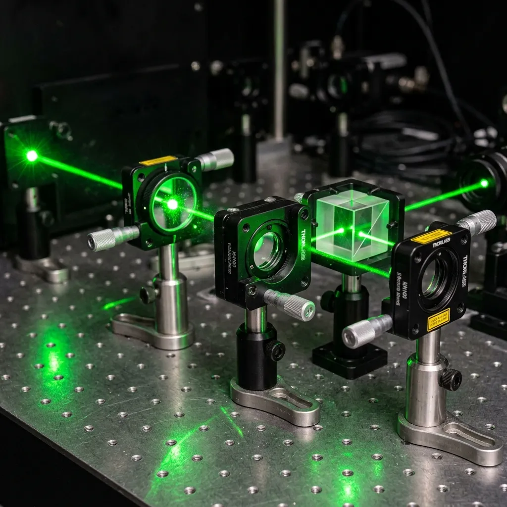

Optical Interferometry & Wavefront Modeling.
The physical principles governing non-contact mineral vibration measurement.
Our entire diagnostic process operates upon the stringent laws of optical physics, utilizing phase-shifted light to map microscopic acoustic movement. This approach fundamentally detaches the observer from the artifact, preventing the mechanical degradation inherent in classical organology. Through climate-controlled darkroom isolation, we guarantee sub-nanometre accuracy across our complete measurement spectrum.

Interferometric Resonance Mapping.
Optical extraction of standing waves from prehistoric acoustic artifacts.
Our core analytical process utilizes multi-axis laser Doppler vibrometry to detect microscopic structural deformations across the surface of lithic and organic artifacts. By projecting a grid of coherent optical beams onto the target surface, we record the phase-shift of the reflected light, translating those variations into high-fidelity acoustic waveforms. This technique allows us to achieve spatial resolutions of under 10 micrometres and frequency responses well beyond human hearing. Unlike traditional contact microphones or piezo-electric transducers, our optical method exerts zero physical force on the artifact, eliminating the risk of micro-fracturing delicate archaeological finds.
Optical Elastography Procedures
The Sterkfontein protocol relies on an automated, six-degree-of-freedom robotic staging system to position artifacts within the interferometric field. This isolated platform floats on a bed of pressurized nitrogen, decoupling the specimen from all terrestrial seismic activity and background laboratory noise. During a standard diagnostic run, our sensors map up to ten thousand discrete nodal points across the artifact's surface, recording the exact phase and amplitude of internal standing waves. This data is then fed into our proprietary Fourier-transform algorithms, which isolate the fundamental resonant frequencies from the surrounding structural noise, producing a clean, mathematically perfect acoustic signature.
The core scanning process is divided into three distinct phases. First, Topological Mapping utilizes structured light to create a sub-millimetre 3D mesh of the object's geometry, identifying any internal fissures or structural weaknesses that might skew the acoustic data. Second, Acoustic Excitation employs highly focused, modulated acoustic pressure waves—rather than physical strikes—to induce microscopic vibrations within the artifact, carefully controlled to remain well below the material's elastic limit. Finally, Interferometric Capture records the resulting surface oscillations, generating a massive matrix of velocity data that is processed in real-time by our on-site computational cluster.
Hardware Specifications & Calibration
The laboratory is built around a custom Polytec 3D Scanning Vibrometer array, modified specifically for non-contact archaeological analysis. This array is housed within an ISO Class 4 cleanroom to prevent atmospheric particulate matter from interfering with the laser optics, maintaining a constant temperature of 20.0°C (±0.1°C) and a relative humidity of exactly 45%. The entire optical rig is mounted on a two-ton granite optical table, isolated from the bedrock by active pneumatic dampeners. This extreme environmental control is strictly necessary to prevent thermal expansion from introducing artifacts into the high-frequency measurements, guaranteeing the absolute veracity of our acoustic reconstructions.
System calibration is performed prior to every diagnostic scan using a set of NIST-traceable synthetic quartz reference spheres. These spheres possess mathematically proven resonant frequencies, allowing us to verify the absolute accuracy of the optical sensors across the entire spectrum. Furthermore, our environmental sensors continuously log atmospheric pressure, temperature, and background vibration, embedding this metadata directly into the output audio files. This rigorous calibration protocol ensures that every dataset generated by Litho-Acoustic Resonance Laboratories meets the exacting standards required for international forensic arbitration and academic peer-review.
Quality Control & Measurement Metrology
Maintaining analytical credibility requires strict adherence to international measurement standards. The Sterkfontein laboratory is designed around ISO/IEC 17025 accredited acoustic measurement procedures, guaranteeing that every dataset is reproducible and structurally uncompromised.
Our quality control regimen includes automated daily calibration routines and active laser wavelength stabilization protocols to prevent thermal drift. The primary testing chamber is heavily shielded, maintaining a consistent acoustic isolation criteria of less than 15 dBA ambient floor noise. Furthermore, atmospheric humidity and temperature inside the darkroom are strictly regulated to prevent the condensation of micro-droplets on the optical lenses, which could artificially alter phase readings.
Consult with Our Optical Physicists
Direct collaboration with our senior palaeo-acoustic staff ensures that unique archaeological challenges receive bespoke technical solutions. We encourage researchers to submit custom methodology inquiries.